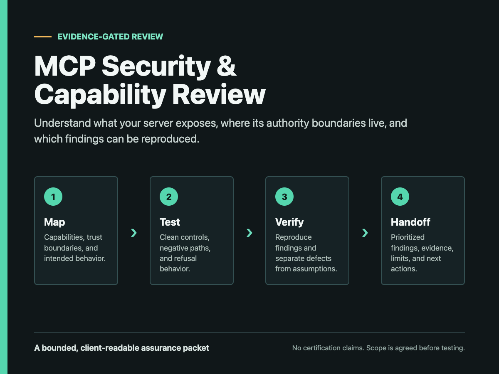

Authority
Which identity, audience, resource, scope, and session bindings govern a call?
Operator-owned synthetic demonstration
A bounded example of how authority, refusal paths, and evidence can be mapped before higher-risk testing begins.

01 / Executive view
The review turns an MCP-shaped system into a decision map: who can act, what resource is addressed, which operation is allowed, how refusal behaves, and what evidence can be handed to another reviewer.
Which identity, audience, resource, scope, and session bindings govern a call?
Where do local policy, MCP transport, application behavior, and external effects separate?
Which clean control and negative paths are reproducible from pinned inputs?
What can be stated now, what remains untested, and what needs new authorization?
02 / Boundary map
The sample starts with a narrow read-only operation and makes each policy decision explicit. The diagram describes the fixture, not MCP as a whole.
| Boundary | Fixture rule | Exercised evidence | Limit |
|---|---|---|---|
| Resource | Exact target required | Mismatch denied | No production protected-resource deployment |
| Audience | Intended recipient required | Wrong audience denied | No external issuer validation |
| Scope | Minimal read grant | Insufficient scope denied | No complete authorization matrix |
| Session / replay | Bound subject and unique operation | Mismatch and replay denied | No production session service |
| Network | Loopback target only | External host refused before request | No external-host assessment |
03 / Evidence summary
Both runs were regenerated from current source. Each retains one clean control, seven expected refusal paths, and zero external actions.
Node.js loopback policy surface
9/9 tests passed · receipt verifier passed
FastMCP 3.4.4 · stateless JSON Streamable HTTP
9/9 tests passed · receipt verifier passed
The signed-agent envelope is application-layer fixture policy and not an MCP conformance result. Receipt verification is local and not an independent certification.
04 / Client delivery
The synthetic sample demonstrates the format. A client engagement starts from written scope and substitutes client-approved staging evidence only where authorization permits.
Actors, resources, scopes, side effects, and decision owners.
Tools, transports, trust boundaries, and declared exclusions.
Clean controls, negative paths, receipts, and confidence labels.
Prioritized questions with the smallest useful next proof.
Client-safe commands, expected outcomes, and stop conditions.
Inputs, environment, delivered artifacts, verification, and limits.
Best for teams that need a credible authority and capability inventory before testing.
Add clean and negative-path checks against an approved fixture or staging surface.
Add a bounded regression fixture and a reviewer-ready evidence handoff.
Start with the boundary
The first decision is whether the work can be scoped and checked safely.
05 / Evidence appendix
Machine-readable evidence is included alongside this report in
evidence.json. It records the source hashes, scenario counts,
external-action totals, and claim boundaries used for this synthetic sample.
proof-labs/mock-mcp-authz/artifacts/latest-scenarios.json
proof-labs/fastmcp-signed-agent-integration/artifacts/latest-scenarios.json